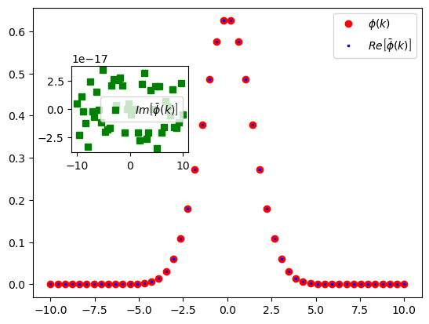
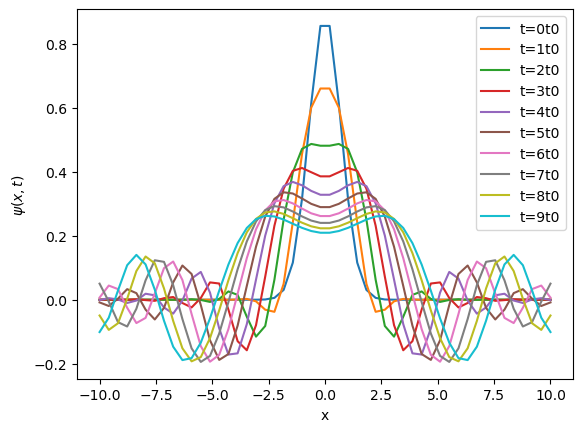

Gaussian wavepacket#
The Gaussian wavepacket is given by
\[
\psi(x, 0) = A \exp (-a x^2)
\]
import numpy as np
from scipy.integrate import quad, quad_vec
from scipy.constants import hbar, m_e
A, A_vec = 1, np.asarray(1, dtype=np.complex128)
a, a_vec = 1, np.asarray(1, dtype=np.complex128)
hbar, m_e = np.asarray(hbar, dtype=np.complex128), np.asarray(m_e, dtype=np.complex128)
xmin, xmax = -10, 10
xmin_vec, xmax_vec = np.asarray(xmin, dtype=np.complex128), np.asarray(xmax, dtype=np.complex128)
kmin, kmax = -10, 10
kmin_vec, kmax_vec = np.asarray(kmin, dtype=np.complex128), np.asarray(kmax, dtype=np.complex128)
a_vec
array(1.+0.j)
a_vec.conjugate()
np.complex128(1-0j)
def gaussian(x):
return A*np.exp(-1*a*x**2)
def gaussian_vec(x):
x = np.asarray(x, dtype=np.complex128)
value = A*np.exp(-1*a*x**2)
return value.astype(np.complex128)
def integrand_of_norm(x):
return gaussian(x)**2
def integrand_of_norm_vec(x):
x = np.asarray(x, dtype=np.complex128)
value = gaussian_vec(x)*gaussian_vec(x).conjugate()
return value.astype(np.complex128)
def get_norm():
norm = quad(integrand_of_norm, -np.inf, np.inf)
return norm[0]
def get_norm_vec():
"""quad_vec() takes care of vectorized integrals"""
result = quad_vec(integrand_of_norm_vec, -np.inf, np.inf)
return result[0]
# test get_norm()
norm = get_norm()
norm
1.2533141373155017
A /= np.sqrt(norm)
A
np.float64(0.8932438417380018)
# test get_norm_vec()
norm_vec = get_norm_vec()
norm_vec
np.complex128(0.999999999999999+0j)
The wavepacket is composed of k-waves with the coefficient \(\phi(k)\)
\[
\psi(x) = \frac{1}{\sqrt{2\pi}}\int_{-\infty}^{+\infty} \phi(k) \exp \left[ +j k x\right]\, \mathrm{d}k
\]
where the coefficient is given by
\[
\phi(k) = \frac{1}{\sqrt{2\pi}}\int_{-\infty}^{+\infty} \psi(x) \exp \left[ -j k x\right]\, \mathrm{d}x
\]
def integrand_of_coefficient(x, k):
return 1/np.sqrt(2.0*np.pi)*gaussian(x)*np.exp(-1j*k*x)
def integrand_of_coefficient_vec(x, k):
x = np.asarray(x, dtype=np.complex128)
k = np.asarray(k, dtype=np.complex128)
prefactor = 1/np.sqrt(2.0*np.pi)
prefactor = np.asarray(prefactor, dtype=np.complex128)
value = prefactor*gaussian_vec(x)*np.exp(-1j*k*x)
return value.astype(np.complex128)
def get_coefficient(k):
coefficient = quad(integrand_of_coefficient, -np.inf, np.inf, args=(k,))
return coefficient[0]
def get_coefficient_vec(k):
k = np.asarray(k, dtype=np.complex128)
result = quad_vec(integrand_of_coefficient_vec, -np.inf, np.inf, args=(k,))
coefficient = result[0]
return coefficient
coeff = get_coefficient(1)
coeff
0.4919051987112381
coeff_vec = get_coefficient_vec(1)
coeff_vec
np.complex128(0.49190519871123844-1.3877801042704258e-17j)
coeff_vec.real, coeff_vec.imag
(np.float64(0.49190519871123844), np.float64(-1.3877801042704258e-17))
ks = np.linspace(xmin, xmax)
coeffs = [get_coefficient(k) for k in ks]
coeff_vecs = [get_coefficient_vec(k) for k in ks]
Let us plot the coefficient function and check if it is also a real valued function.
coeff_vec_reals = [each.real for each in coeff_vecs]
coeff_vec_imags = [each.imag for each in coeff_vecs]
import matplotlib as mpl
import matplotlib.pyplot as plt
fig, ax = plt.subplots()
ax.plot(ks, coeffs, 'ro', lw=3, label=r'$\phi(k)$')
ax.plot(ks, coeff_vec_reals, 'bs', lw=3, ms =2, label=r'$Re\left[\bar{\phi}(k)\right]$')
ax1 = ax.inset_axes([0.1,0.5, 0.3, 0.3])
ax1.plot(ks, coeff_vec_imags, 'gs', label=r'$Im\left[\bar{\phi}(k)\right]$')
ax.legend()
ax1.legend()
<matplotlib.legend.Legend at 0x7d5879d82850>

Time evolution of wave packet#
The wavepacket evolves in time. Each k-wave picks up a phase over time with the phase factor given by
\[
\exp \left[ - j \frac{E(k)t}{2m} \right],
\]
where \(E(k)\) is given by
\[
E(k) = \frac{\hbar^2 k^2}{2m}
\]
So the contribution to the wavepacket from k-wave changes from
\[
\phi (k) \exp \left[ +j k x\right]
\]
to
\[
\phi (k) \exp \left[ - j \frac{E(k)t}{\hbar} \right] \exp \left[ +j k x\right]
\]
def energy(k):
return hbar**2*k**2/(2*m_e)
def energy_vec(k):
k = np.asarray(k, dtype=np.complex128)
value = np.pow(hbar, 2+0j)*np.pow(k, 2+0j)/((2+0j)*m_e)
return value.astype(np.complex128)
def integrand_of_wave(k, x, t):
coefficient = get_coefficient(k)
temporal_phase = np.exp(-1j*energy(k)*t/hbar)
spatial_phase = np.exp(1j*k*x)
return 1/np.sqrt(2.0*np.pi)*coefficient*temporal_phase*spatial_phase
def integrand_of_wave_vec(k, x, t):
x = np.asarray(x, dtype=np.complex128)
#k = np.asarray(k, dtype=np.complex128)
t = np.asarray(t, dtype=np.complex128)
prefactor = 1/np.sqrt(2.0*np.pi)
prefactor = np.asarray(prefactor, dtype=np.complex128)
coefficient_vec = get_coefficient_vec(k)
temporal_phase_vec = np.exp(-1j*energy_vec(k)*t/hbar)
spatial_phase_vec = np.exp(1j*k*x)
value = prefactor*coefficient_vec*temporal_phase_vec*spatial_phase_vec
return value.astype(np.complex128)
def wave(x, t):
psi = quad(integrand_of_wave, kmin, kmax, args=(x, t))
return psi[0]
def wave_vec(x, t):
x = np.asarray(x, dtype=np.complex128)
t = np.asarray(t, dtype=np.complex128)
result = quad_vec(integrand_of_wave_vec, kmin, kmax, args=(x, t))
value = result[0]
return value.astype(np.complex128)
# test wave()
w, werror = quad(integrand_of_wave, kmin, kmax, args=(-2, 10))
/home/fubar/miniconda3/lib/python3.13/site-packages/scipy/integrate/_quadpack_py.py:609: ComplexWarning: Casting complex values to real discards the imaginary part
return _quadpack._qagie(func, bound, infbounds, args, full_output,
/home/fubar/miniconda3/lib/python3.13/site-packages/scipy/integrate/_quadpack_py.py:607: ComplexWarning: Casting complex values to real discards the imaginary part
return _quadpack._qagse(func,a,b,args,full_output,epsabs,epsrel,limit)
w
0.016360123344360353
# test wave_vec
w_vec, werror_vec = quad_vec(integrand_of_wave_vec, kmin, kmax, args=(-2, 10))
w_vec
np.complex128(0.016360123344357685+0.0001325802200246036j)
Spread of the wavepacket#
Let us define the timescale of the problem
\[
t_0 = \frac{m_e}{2\hbar a}
\]
For \(t \gg t_0\), the Full Width at Half Maximum (FWHM) of the wavepacket is given by
\[
\text{FWHM}_{x(t)} \simeq 2\sqrt{\frac{\ln 2}{a}} \frac{t}{t_0}
\]
t0 = m_e/(2.0*hbar*a)
t0
np.complex128(4318.996374392254+0j)
ts = np.linspace(0, 10*t0, 10)
xs = np.linspace(xmin, xmax, 50)
waves = np.zeros((len(ts), len(xs)))
wave_vecs = np.zeros((len(ts), len(xs)))
for i, t in enumerate(ts):
for j, x in enumerate(xs):
waves[i][j] = wave(x, t)
fig, ax = plt.subplots()
for i in range(len(waves)):
ax.plot(xs, waves[i], label=f't={i}t0')
ax.set_xlabel('x')
ax.set_ylabel(r'$\psi(x,t)$')
ax.legend()
<matplotlib.legend.Legend at 0x7d5878748910>

for i, t in enumerate(ts):
for j, x in enumerate(xs):
wave_vecs[i][j] = wave_vec(x, t)
/tmp/ipykernel_410879/71966703.py:3: ComplexWarning: Casting complex values to real discards the imaginary part
wave_vecs[i][j] = wave_vec(x, t)
wave_vecs[0][0]
np.float64(-5.273322985997755e-13)
fig, ax = plt.subplots()
for i in range(len(wave_vecs)):
ax.plot(xs, wave_vecs[i], label=f't={i}t0')
ax.set_xlabel('x')
ax.set_ylabel(r'$\psi(x,t)$')
ax.legend()
<matplotlib.legend.Legend at 0x7d587886d590>
wave_vecs[0]
ts
xs
ks= np.linspace(-10, 10, 100)
w0s = [integrand_of_wave(k, -2, 0) for k in ks]
w, werror = quad(integrand_of_wave, -10, 10, args=(-2, 0))
fig, ax = plt.subplots()
ax.plot(ks, w0s, 'ro-', lw=3, label=r'$\phi (k) \exp \left[ - j \frac{E(k)t}{\hbar} \right] \exp \left[ +j k x\right]$')
ax.set_xlabel('k')
ax.legend()
w
import this